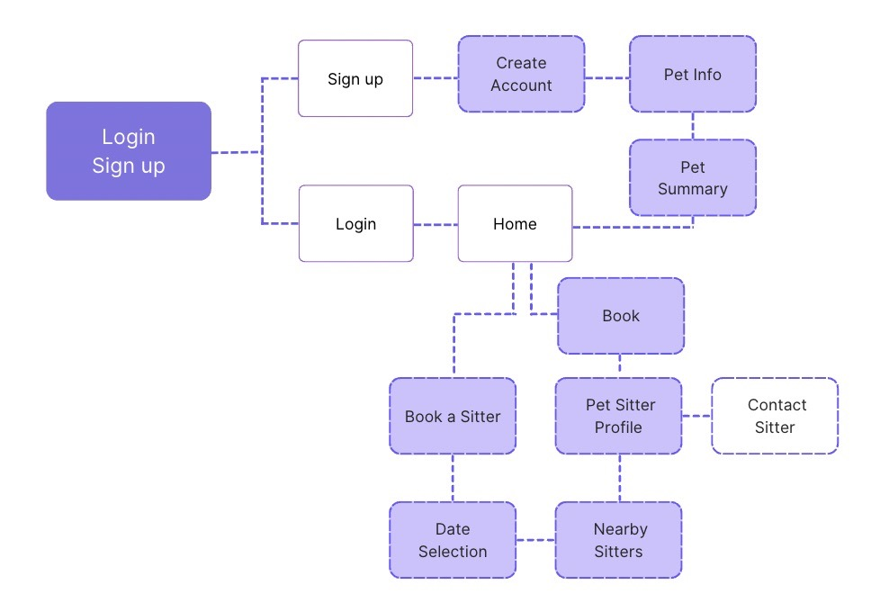

Pet Patrol is an iOS and Android mobile app designed for pet owners in need of supervision for their pets to match pet owners with verified pet sitters based on geolocation and availability.
This project was part of the CareerFoundry UI Course.
Introduction
Duration: 4 Weeks
Role: UI/UX designer
Tools: Adobe XD & Invision
Objective
Develop an iOS and Android mobile app that addresses a particular user issue, adhering to both iOS and Material Design standards.
About
Pet Patrol is a mobile app for iOS and Android, created to help pet owners who require care for their pets when they are not around.
The Problem
As people take vacations, or trips, or are away from home for extended periods of time, they may be anxious when they leave their furry companions home alone or try to find a trusted pet sitter.
The Solution
The application quickly finds certified trusted sitters or walkers based on the user's schedule, without having to negotiate with a sitter or walker. With the app's built-in features, it gives users simple functionalities, leaving pet owners happy.
Design Process
Competitive Analysis
About the Competitors
The main competitors in the pet care space are Rover and Wag. Both applications offer services such as pet sitting, dog walking, and training services.
While researching, I came across issues in both. With their problems, I came upon beneficial solutions to enhance the app's experience.
Wag
There are more 1 star reviews than five-star reviews. Most of the highlighted reviews on the app have reported inconsistent availability booking demands and a poor UX experience for Android users, earning the app a bad reputation.
Rover
Rover may have better reviews than Wag. However, pet sitters cite issues due to a lack of calendar availability functions and the challenge of matching schedules for users.
Userflow & Sketch Wireframes

I needed to test the competitor apps to enhance my understanding of the outcome of my pet app. I aimed to identify features that would have a significant impact while keeping the process simple and brief. I came up with the app's user flow with several steps to get to the final action.
I then created sketches of the app's flow for both iOS and Android to visualize the app's appearance.
Mood Board
For the mood, I wanted to create and visualized the app to have a friendly cheerful mood, with colorful hues and illustrations, as is common in most pet care apps.
Tester's Feedback
Tester #1 - Android
The designs are nicely made, it's very easy to control
Scheduling a pet sitter is easy. The steps are simple and short.
Would like to see more information on the pet sitter than just about themselves and their skills.
Tester #2 - iOS
I like the mood of the app. It's a good product.
Maybe have the text bars filled out instead of having them empty so it looks realistic.
The features are good. I thought I was able to click on the other services besides pet sitter but overall it's well-designed.